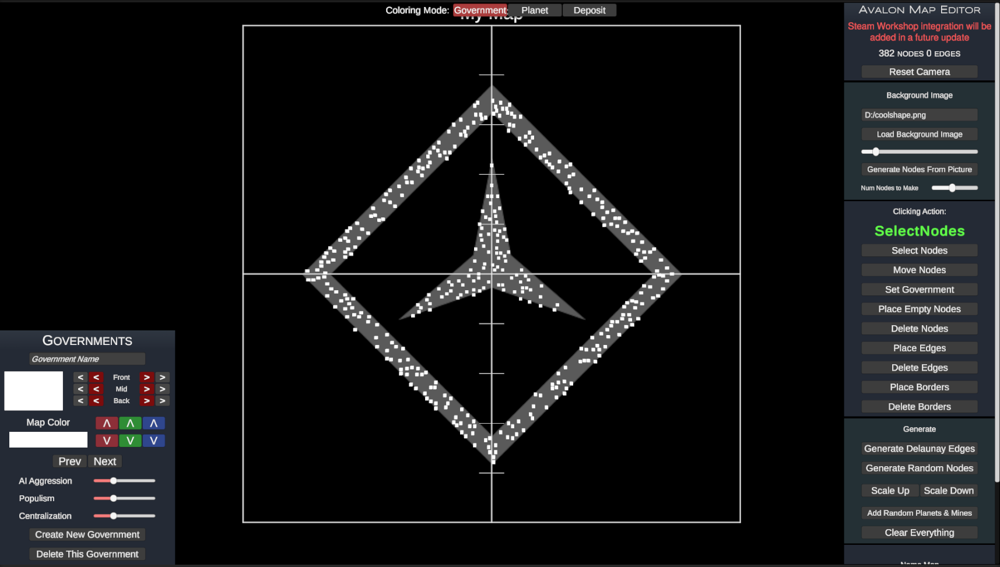
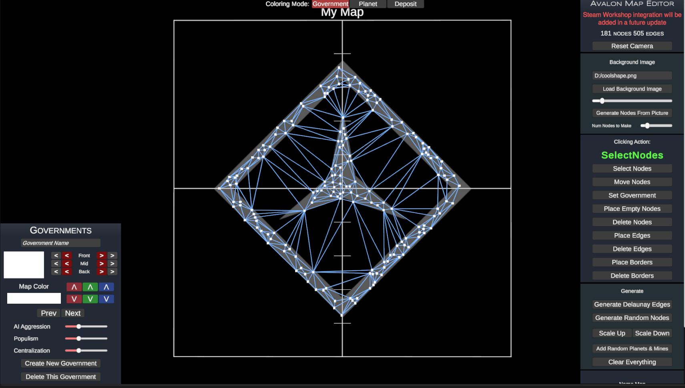
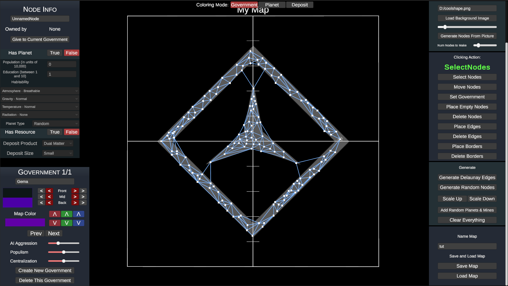
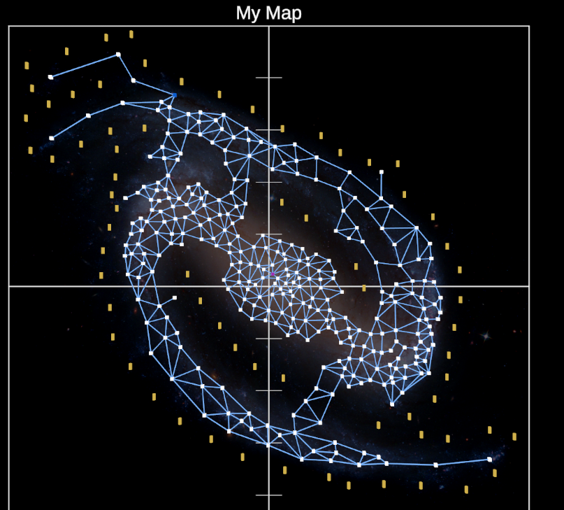
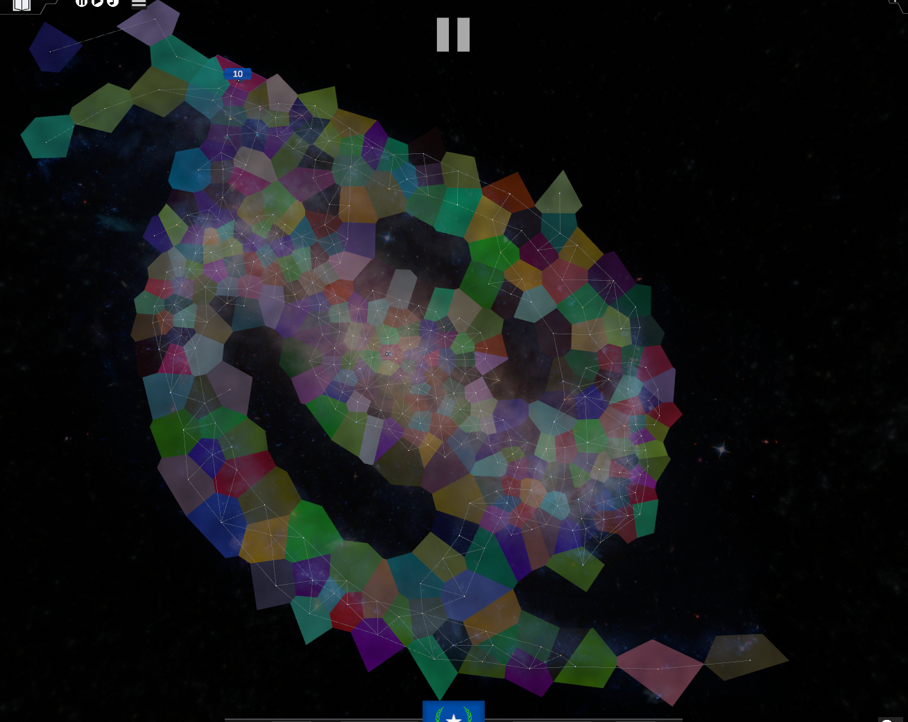

To begin making a map, start by clicking "Create New Government". You must have at least one government to save or play on a custom map.
The map consists of three things: Nodes, Edges, and Borders. Nodes represent star systems or provinces in the game, Edges are connections between them, and Borders are extra data that tells the game how to create the background graphics.
Now, begin placing some nodes. You can do this in three different ways. First, you can click "Place Empty Nodes" then start clicking on the map to place nodes manually. Second, you can click "generate random nodes" to randomly place a bunch of them. Third, you can load a Background Image by typing in the path of the file such as "D:/myphoto.png" and loading it. Then click "generate nodes from picture" to generate nodes randomly according to the brightness of the photo at every pixel. You can draw the shape of the map in an image editor then load it in like this.
Now, we need to make edges between the nodes. You can click "Place Edges" as your clicking action, then click two nodes to add an edge between them. You can delete this by setting your clicking action to "Delete Edges" and clicking on the edges themselves. You can quickly generate edges by clicking "Generate Delaunay Edges" as done below.
Now let's delete the bad edges and move some nodes around
Now we need to add the governments to the world and fill in the nodes. You can quickly add random planets and mines to the nodes by clicking "Add Random Planets and Mines". Then set clicking action "Select Nodes" and click on the nodes to edit the planets and mines they have
Now, give every government control over at least one node at the start. Do this by setting clicking mode "Set Government" then clicking on the nodes the current government (click prev and next in bottom left government panel to cycle through them) gets.
Finally, we just need to add the Border Points. Border Points will be used to define empty areas of the map. They should not intersect your nodes and should be placed anywhere you don't want the node's border backgrounds to push into. The border points are yellow in this image
 Once you're done, save the map (there must be at least one government to save it properly) and go back to the main menu. Click start, then start on customm map and select the government to play as.